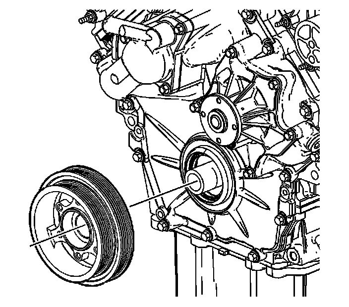
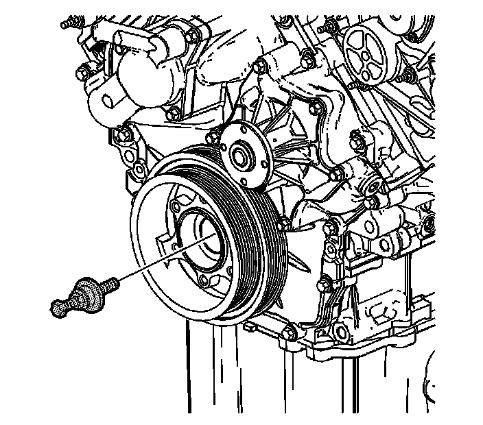
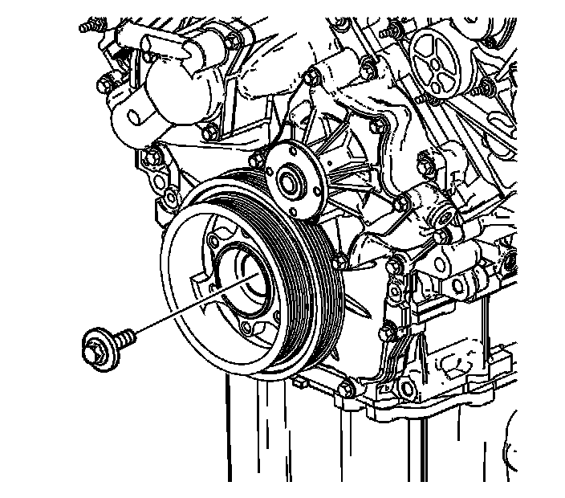
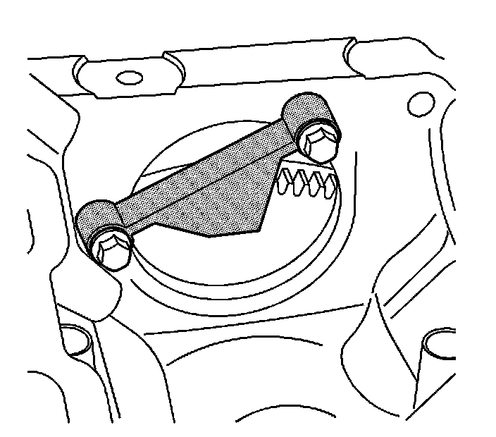

129. Crankshaft Balancer Installation
Crankshaft Balancer Installation
Tools Required
* EN 46326 Flywheel Holding Tool
* J 41998-B Crankshaft Balancer Installer
* J 45059 Angle Meter

1. Position the crankshaft balancer on the nose of the crankshaft.

2. Press the crankshaft balancer in place using the J 41998-B .

3. Clean the crankshaft balancer bolt threads.
4. Apply engine oil to the crankshaft balancer bolt threads.
Notice: Refer to Fastener Notice (Fastener Notice) .
5. Install the crankshaft balancer bolt.
1. First Pass
Tighten the crankshaft balancer bolt to 50 N.m (37 lb ft).
2. Final Pass
Tighten the crankshaft balancer bolt an additional 150 degrees using the J 45059 .

6. Remove the EN 46326 from the engine block.